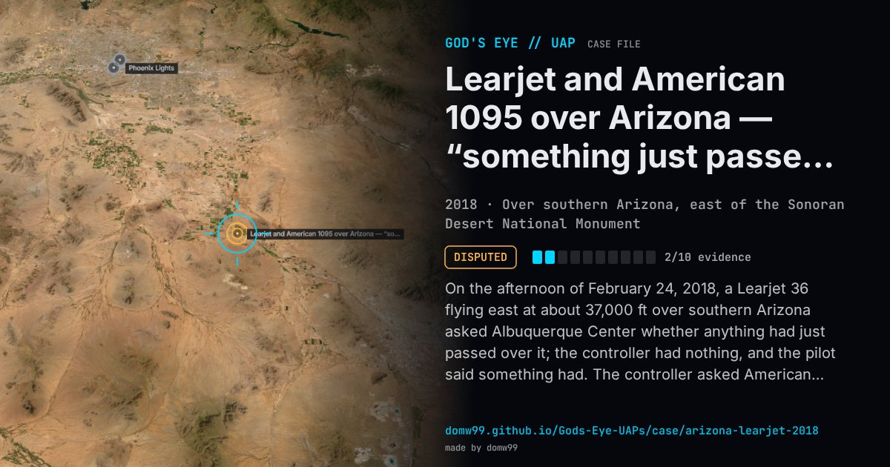

Learjet and American 1095 over Arizona — “something just passed over us”

On the afternoon of February 24, 2018, a Learjet 36 flying east at about 37,000 ft over southern Arizona asked Albuquerque Center whether anything had just passed over it; the controller had nothing, and the pilot said something had. The controller asked American Airlines Flight 1095, an Airbus A321 following on the same route, to watch for traffic above it within the next 15 miles; a few minutes later its crew reported that something had passed over them, two or three thousand feet higher, going the other way, and, asked whether it was moving or hovering, said it was very bright or reflective. Someone on the frequency suggested a Google balloon, which the airline crew doubted, and someone else called it a UFO. The FAA released the recording to reporters in March; it said the controller could not see any other aircraft and suggested a high-altitude balloon. Nothing more was published.
Explanation
An FAA spokesperson suggested a high-altitude balloon, which need not carry a transponder or tell air traffic control; the area sees regular research and weather balloons. The controller could not see anything on radar, and the pilots, who saw it pass above and in the opposite direction, did not sound convinced. No report of a military aircraft or drone in the area emerged.
What was seen
Shape: A bright, reflective object several thousand feet above the airliners
Witnesses: The crew of a Phoenix Air Learjet 36 and of American Airlines Flight 1095, an Airbus A321; the Albuquerque Center controller
Duration: About six minutes for both reports
Sources
- The War Zone — a Learjet and an Airbus encounter a mystery craft high over Arizona (with the FAA audio)
- CBS News — two airline pilots report seeing a UFO while flying over Arizona
Browse
- United States
- 2010s
- Disputed
- Aviation encounters
- Pilot and aircrew witnesses
- Audio recordings or radio transcripts
- Formations and rows of lights